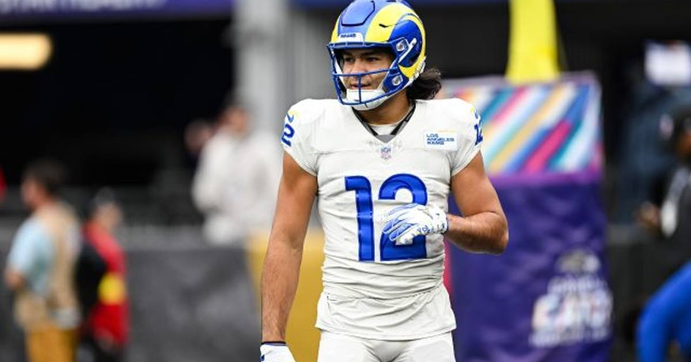

Puka Nacua suspended three games — and MCL surgery likely ends his season
Puka Nacua was suspended three games by the NFL for violating the personal conduct policy, and a day later Sean McVay revealed the Rams star underwent MCL surgery that will sideline him for a couple of months.

Disclosure: this post contains affiliate links. I earn a commission on qualifying purchases.
The suspension
The NFL suspended Los Angeles Rams wide receiver Puka Nacua for three games on Thursday for violating the league's personal conduct policy. The suspension began immediately, and because Nacua is already on injured reserve, he can serve it while he rehabs — meaning it costs him no additional games beyond the ones he was already going to miss.
It does cost him money. Nacua will forfeit three game checks, roughly $961,167 according to NFL Network's Tom Pelissero, and he cannot practice or attend games during the suspension. He is eligible for reinstatement on Monday, December 14, the day after the Rams' Week 14 game against the 49ers. The league also warned him that any further violation of the policy, including failing to satisfy the conditions of his diversion program, could bring additional and more substantial discipline, up to and including banishment.
The surgery
One day after the suspension came down, head coach Sean McVay delivered the news that actually ends Nacua's season. The 25-year-old underwent surgery on his MCL on Tuesday, November 17, and will be out for a couple of months. McVay would not rule out a playoff return entirely, but the Rams are operating on the expectation that he will not play again this season.
The timing made for a strange sequence: the NFL was unaware that Nacua had already undergone knee surgery when it imposed the suspension, ESPN reported. And according to NFL Network's Ian Rapoport, Nacua's recovery timeline does not match up with a potential return for Super Bowl LXI either — his only path back this season would be a deep Rams playoff run, and even that looks like a long shot.
How he got here
Nacua suffered MCL and PCL sprains, along with a turf toe injury, on the Rams' final offensive snap of their 20-13 win over the Washington Commanders on November 8. He was placed on injured reserve on November 12, which requires a minimum four-game absence, and he had already missed the Week 10 win over Arizona before the suspension was announced. The Rams are on their bye this week, and his earliest possible return date was the Week 15 home game against the Dallas Cowboys on December 20.
The backstory
The suspension stems from a New Year's Eve 2025 incident that led to a civil lawsuit filed in March, in which a woman accused Nacua of biting her on the shoulder and making an antisemitic remark after a group dinner in Los Angeles. Nacua has denied the allegations and entered a rehab program in April. The ban was the result of a negotiated settlement between the NFL and the NFL Players Association, rather than a full hearing before Judge Sue L. Robinson.
The season he was having
Losing Nacua is a major blow to a Rams offense that was already shorthanded. He caught 70 passes on 93 targets for 715 yards and four touchdowns in seven games this season, adding 41 rushing yards and a rushing score. His final game before the injury was his best of the year: 14 catches for 150 yards and a touchdown in the win over Washington.
The Rams sit at 6-4, two and a half games behind the 8-1 49ers in the NFC West, and they will play the next three games — Green Bay, Kansas City, and San Francisco — without their top receiver. Davante Adams is also still out with a hamstring injury, so the passing game is running on fumes heading into the stretch. And the timing stings beyond this season: Nacua is in the final year of his rookie contract, on a base salary of $5.76 million, and is set to be an unrestricted free agent in 2027. A huge payday is still expected — it just will not come with a healthy finish to this season attached.
Gear up: Fanatics